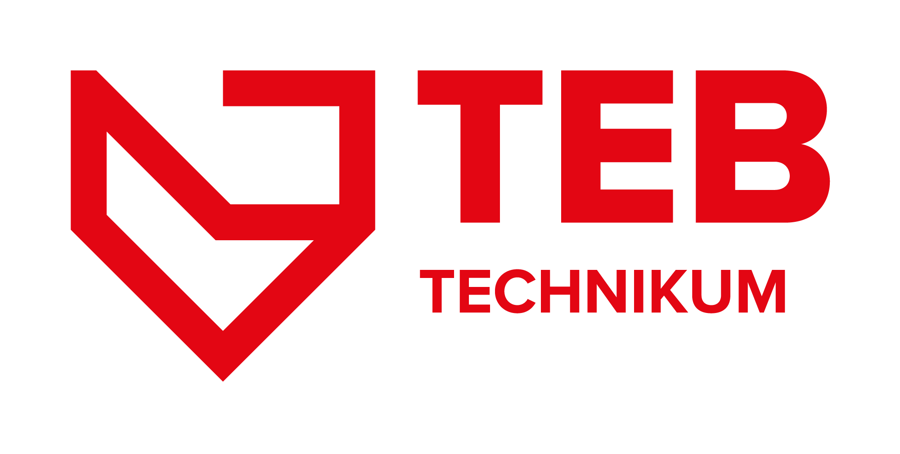

Inflacja
Inflacja to proces wzrostu ogólnego poziomu cen w gospodarce, który prowadzi do spadku wartości pieniądza. Istnieją różne rodzaje inflacji, takie jak inflacja umiarkowana i hiperinflacja, z których ten drugi prowadzi do kryzysu ekonomicznego i destabilizacji gospodarki. Inflacja może mieć różne przyczyny, a Bank Centralny może zastosować politykę pieniężną, aby ograniczyć jej wpływ. Skutki inflacji są złożone, ale w dłuższej perspektywie może prowadzić do zmniejszenia bezrobocia, poprawy konkurencyjności i inwestycji, a nawet do wzrostu gospodarczego. Zrozumienie inflacji i jej wpływu jest ważne dla każdego, kto chce lepiej zrozumieć ekonomię i jej wpływ na świat.


Hiperinflacja
Hiperinflacja jest stanem, w którym dochodzi do gwałtownego wzrostu cen, prowadzącego do utraty wartości waluty. Przyczyny hiperinflacji mogą obejmować nadmierny druk pieniędzy, deficyt budżetowy i brak stabilności politycznej. Skutki hiperinflacji to m.in. trudności w prowadzeniu biznesu, wzrost przestępczości i niepokojów społecznych. Jednym z najważniejszych sposobów zapobiegania hiperinflacji jest utrzymanie stabilności cen i zaufania do waluty i systemu finansowego poprzez stosowanie skutecznych polityk fiskalnych i monetarnych oraz zwiększenie transparentności systemu finansowego. Podsumowując, hiperinflacja jest poważnym zagrożeniem dla gospodarki, ale można jej zapobiegać poprzez odpowiednie działania polityczne i ekonomiczne.
Deflacja
Z jednej strony, deflacja może być korzystna dla konsumentów, ponieważ zyskują oni na niższych cenach towarów i usług. Jednak z drugiej strony, deflacja może prowadzić do spadku popytu na towary i usługi oraz do zwiększenia bezrobocia, co może negatywnie wpłynąć na gospodarkę jako całość. Istnieją różne przyczyny deflacji, takie jak spadek kosztów produkcji, wzrost wydajności pracy, spadek popytu lub nadmierna podaż towarów i usług. Warto zauważyć, że deflacja nie jest równoznaczna z recesją lub kryzysem gospodarczym. Choć deflacja może być jednym z objawów takiego kryzysu, to nie zawsze musi nim być.
Denominacja
Celem denominacji jest przywrócenie stabilności monetarnej i zaufania do waluty, a także walka z przestępczością finansową. Jednakże, wprowadzenie nowych pieniędzy o mniejszych nominałach jest kosztowne dla państwa i wymaga wprowadzenia nowych systemów bankowych i kasowych. Mimo korzyści, denominacja jest procesem skomplikowanym i kosztownym.
Recesja
Recesja to okres spowolnienia gospodarczego, który charakteryzuje się spadkiem PKB oraz wzrostem bezrobocia. Przyczynami recesji mogą być między innymi spadek popytu na towary i usługi, zmniejszenie inwestycji, wzrost cen surowców, kryzys finansowy czy pandemia. Skutki recesji są zwykle negatywne dla gospodarki i społeczeństwa, takie jak wzrost bezrobocia, spadek dochodów, problemy finansowe firm i banków, spadek konsumpcji oraz zwiększenie zadłużenia.

Podaż
Podaż zależy od wielu czynników, w tym od kosztów produkcji, dostępności surowców, technologii, polityki podatkowej oraz poziomu konkurencji na rynku. Wpływ podaży na gospodarkę jest znaczący. Zbyt duża podaż może prowadzić do spadku cen, co z kolei może skłonić przedsiębiorców do redukcji produkcji lub nawet zaniechania działalności. Z drugiej strony, zbyt mała podaż może prowadzić do wzrostu cen i spadku zainteresowania danym produktem. Dlatego ważne jest utrzymywanie równowagi między popytem a podażą, co sprzyja stabilnemu rozwojowi gospodarki.